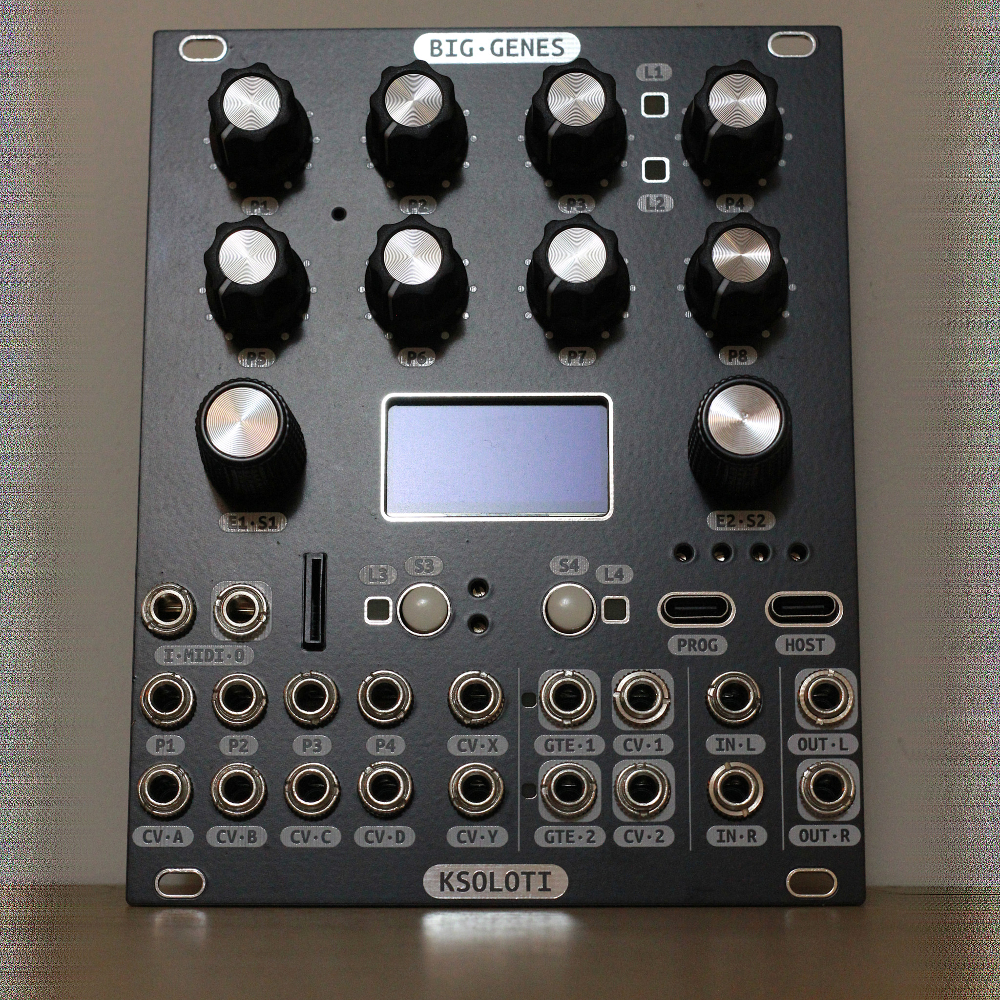
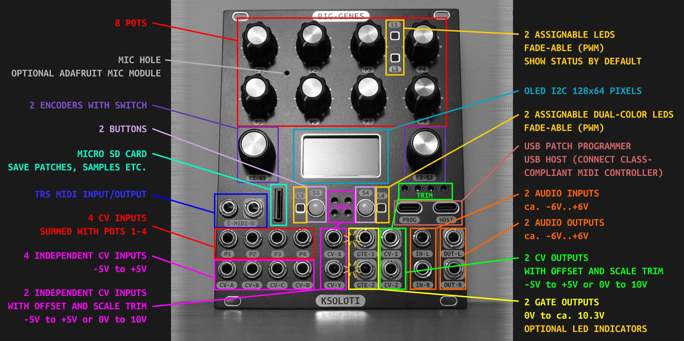

7. Big Genes
Big Genes is a Eurorack module around the Ksoloti Core.

"The Axolotl has a remarkably complex genome. It contains about ten times the information of the human genome. Stop telling yourself you're so special."
ChatGPT, 2024 (Okay I added the last part.)
- 20 HP Eurorack module, depth under 30mm
- 8 Potentiometers
- 2 Encoders with switch
- 2 Buttons
- 4 assignable LEDs: 2 fade-able "Axoloti status" LEDs, green & red. 2 fade-able dual-color LEDs, blue-red
- 1.3" OLED screen, 128*64 pixels, I2C
- Ksoloti Core connectors brought out to the front panel:
- Micro SD card socket
- USB (Type-C) power/programmer connector
- USB (Type-C) host connector - 1 TRS MIDI input jack, type A and B compatible (A: MIDI assoc. standard, Intellijel, Korg, Make Noise... / B: Arturia, Novation, older 1010music...)
- 1 TRS MIDI output jack, Type A (MIDI assoc. standard)
- 4 CV inputs (P1-P4), summed with pots 1-4
- 4 CV inputs (A-D), -5V to +5V
- 2 CV inputs (X-Y), -5V to +5V or 0V to 10V, trimmers for offset and scale
- 2 gate outputs, 0V to ca. 10.3V, optional LED indicators
- 2 CV outputs (1-2), -5V to +5V or 0V to 10V, trimmers for offset and scale
- 2 audio inputs, ca. -6V to +6V
- 2 audio outputs, ca. -6V to +6V
- Expansion header carrying power, I2C, SPI, etc.
- Solder headers, pots, jacks, buttons, encoder, LEDs, OLED yourself
- The kit does not include Ksoloti Core but includes headers required to solder to Ksoloti Core

"The genome whispers secrets that only life itself can interpret, its language a dance of darkness and light. The answers you seek lie in the spaces between heartbeats, where the silence holds the key to unlocking the mysteries of the universe. Embrace the enigma, for in its complexity lies the beauty of truth."
ChatGPT, 2024